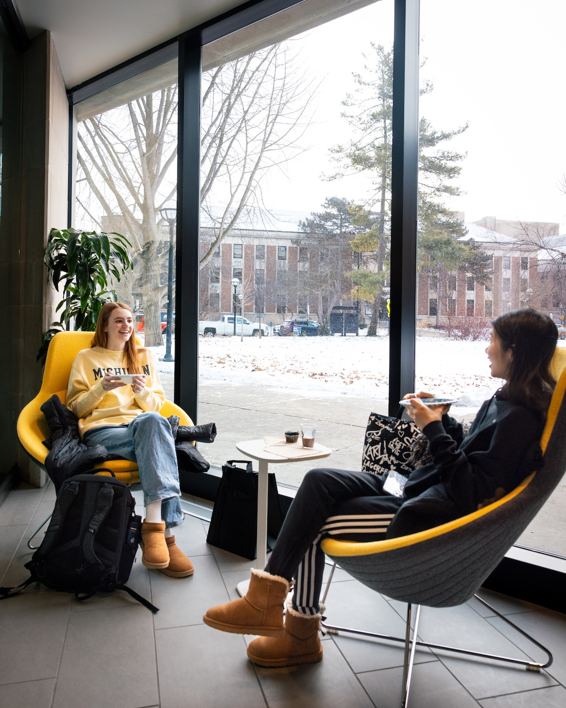

Reaching Out to Alumni
Networking is the best way to find a job or internship, and alumni are the best contacts to reach out to. Alumni can relay insider information about various industries and companies, give advice on how to be more marketable as a UMSI student, and provide many more resources that would otherwise be unattainable.
The best way to network with alumni is to start with email outreach. You may face a low response rate (the average response rate to "cold messages" is around 20%), but any contact you connect with will be a valuable addition to your network.

Outreach Best Practices
- Keep it short: demonstrate that you respect their time
- Establish a time frame:let them know when you'd like to meet or connect
- Personalize the message: convey your respect and value to them as an individual.
Outreach Worst Practices
- Do not ask for basic information: especially information that is readily available online
- Never send your resume first: always ask for and receive permission first
- Do not ask for a referral: not until you've built a strong relationship.
- Never ask for a job: even if you become closer to them.